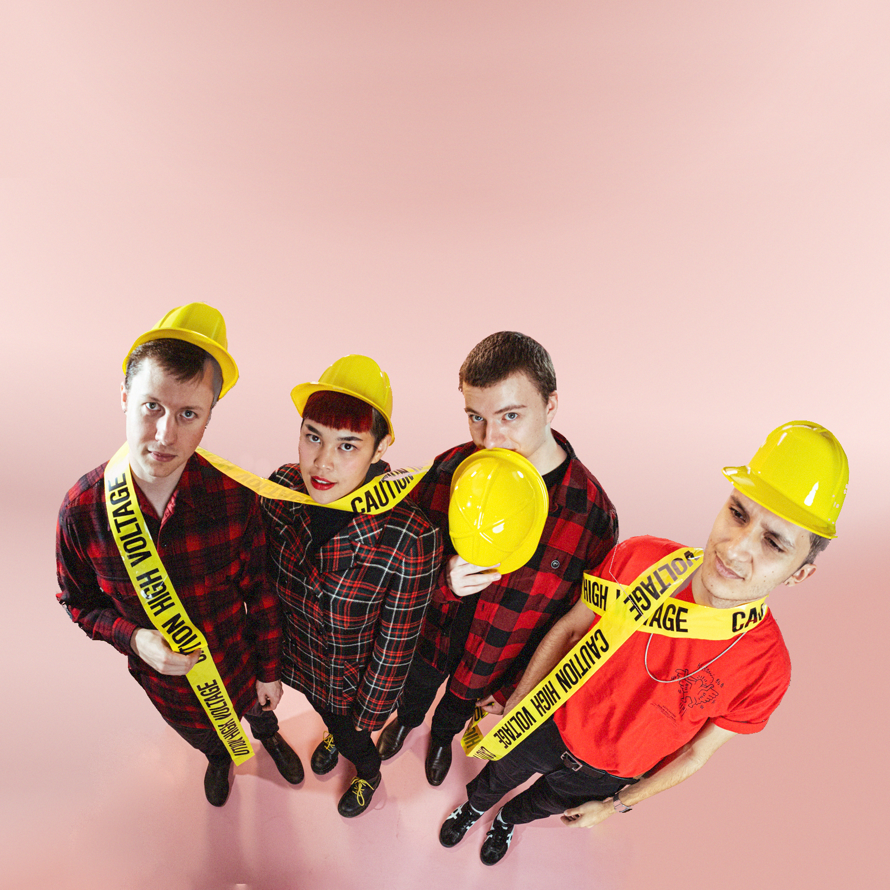
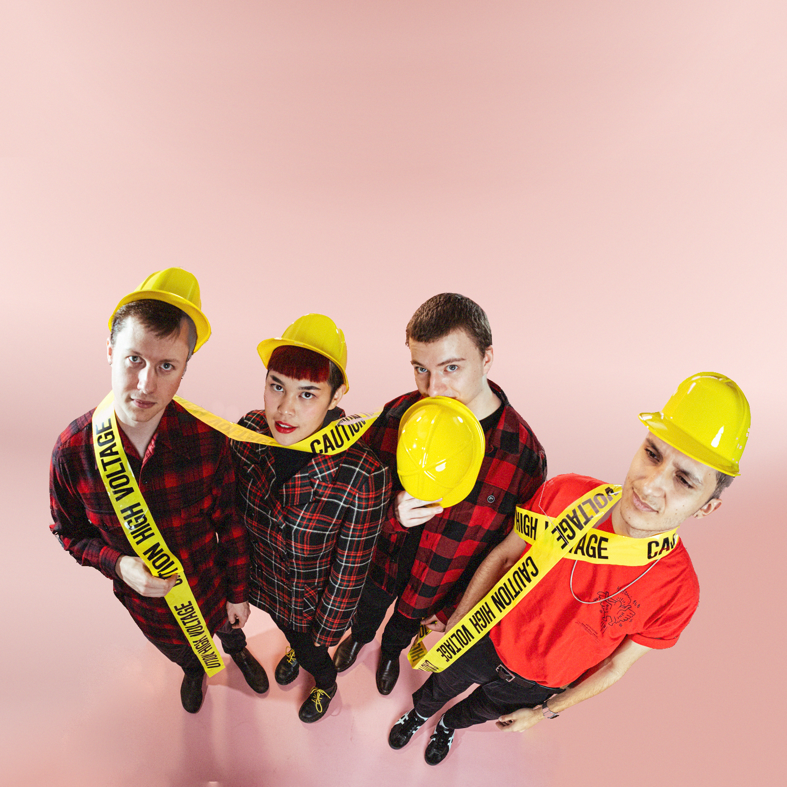

Liv Victorino's rock band brings distortion and intensity to her soaring, dynamic melodies. Their emotional live show includes everything from quiet and tender moments to grand sonic baths.
When she graduated college in June of 2022, Victorino had her acoustic debut EP "Sheer Force of Will" already under her belt. At the time, she had nothing but free/hacked software and a USB microphone, developing a genre-philosophy she coined "Freeware Folk". Despite these material constraints, Victorino's debut touched thousands of ears through recurring broadcasts on Seattle's flagship radio station KEXP.
Victorino had been playing drums for 4 years in several bands before picking up a guitar at 18. Through the unofficial songwriting school of Elliott Smith, she began to craft her signature fingerpicked melodies and emotional writing style. Robin Pecknold of Fleet Foxes noted a "great melodic sense" after a first encounter with her EP.
With her live band, she has moved toward a loud and rhythmic expression of her inward-looking songs. 2024 is looking busy, with new releases and many more live shows.
 
